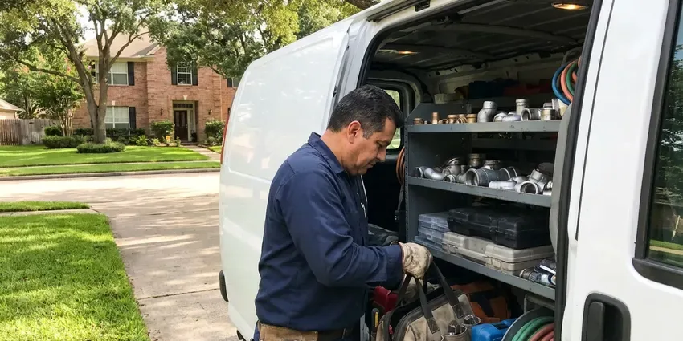

Clogged Drain Repair in Dunwoody, GA
Garage or basement floor drain backing up in Dunwoody, GA? We clear the trap and the line the same day.
- Evening and Weekend Service
- Cables and Jetters Matched to the Line
- Clearing Guarantee
- Every Drain Tested Before We Leave

Get It Draining Again in Dunwoody, GA
We clear it mechanically, then run water through it and explain what we pulled out.
Clogged Drain Repair That Finds the Cause in Dunwoody, GA
HGR Plumbing handles clogs in kitchens, bathrooms, laundry rooms, garages and basements across Dunwoody. Every drain has its own usual suspect. Kitchens get grease and food, showers get hair and soap scum, and laundry lines fill with lint that packs tight in the standpipe.
Work we handle every week:
- Laundry standpipe and drain line clearing
- Floor drain, garage drain and trap seal work
- Compact hydro jetting for grease and scale

Additional Plumbing Maintenance Services in Dunwoody, GA
Our maintenance and specialty plumbing services in Dunwoody, GA protect your home year-round and extend the life of every system.


Customers
Why Choose HGR Plumbing for Clogged Drain Repair in Dunwoody, GA?
A drain that clogs again a week later costs you twice. We would rather do it right one time. That means running the cable the full length of the line, then flushing and watching the drain handle a full sink of water.
- Full-Length Clearing, We clear the whole line, all the way to the main.
- Prevention Tips, We tell you what caused the clog and how to keep it from coming back.
- No Chemicals, Clogs get cleared mechanically, with no caustic products poured in.
Citywide Coverage
Our crews cover Dunwoody, GA and the towns around it. Same vans, same gear. From the center of town out to the edge, we can usually get a tech to you that day.
Experienced Team
The HGR Plumbing crew asks questions before grabbing a cable. What drains are slow? The answers tell them whether the clog is in one fixture, a shared branch or the main line, and that saves a lot of time going in from the wrong opening.
Safety-First Approach
Sewage backups carry bacteria. That calls for care. Our techs wear gloves and eye protection, bag anything contaminated and disinfect the area around the cleanout or fixture before they leave.
Trusted Certified Dunwoody Plumbing Services Professionals
At HGR Plumbing, we take pride in licensed, certified plumbing services throughout Dunwoody, GA. Those papers on the wall mean something. Our plumbers hold recognized industry credentials, and they follow strict safety and quality rules on every repair, installation and maintenance call we run.
Call Us Now PHCC Plumbing Contractor Recognition
PHCC Plumbing Contractor Recognition Better Business Bureau (BBB) Accreditation
Better Business Bureau (BBB) Accreditation Angi Certified Pro
Angi Certified Pro ISO 9001 Quality Management Certification
ISO 9001 Quality Management CertificationSink, Tub, Laundry and Floor Drain Clearing in Dunwoody, GA
Emergency Clog Removal in Dunwoody
An overflowing toilet during a holiday dinner does not wait for business hours. We answer after hours. HGR Plumbing sends a technician in Dunwoody with cables, a closet auger and a portable jetter, so the clog gets cleared on the first visit without waiting on more equipment. You hear the after-hours rate up front.

Hydro-Jetting Services in Dunwoody, GA
A jetter pushes water at thousands of psi through a nozzle that sprays backward and pulls itself down the pipe. It scours the whole wall. Cables punch a hole through a clog, while jetting removes the buildup that would start the next one. It works best on lines that clog again and again.
Bathroom Sink & Shower Clog Repair in Dunwoody, GA
Shower drains slow down a little each week as hair collects on the crossbars. One day the water just sits. We pull the strainer, use a small drum auger to pull the mass out, then clear the trap behind it. A hair catcher costs a few dollars.
Kitchen Sink Clog Repair in Dunwoody
Kitchen sinks clog from grease that cools and hardens on the pipe wall. Then food scraps and soap pile on. We pull the trap, run a cable through the trap arm and down the branch line to the main stack, and check the disposal for a jam or worn impeller. Some lines get a short jetting to clean the walls.
Bathroom Drain Clog Clearing in Dunwoody, GA
Hair, soap scum and toothpaste bind together into a mat that sits on the pop-up stopper. That is where most bath sink clogs start. We pull the stopper and clean it, then clear the trap and cable the drain arm if the flow has not come back. A drain screen helps a lot.
Toilet Clog Repair in Dunwoody
A toilet clog usually sits in the trapway, the S-shaped channel inside the bowl. Plungers often miss it. We use a closet auger with a rubber sleeve, which reaches through the trapway and pulls out the blockage without scratching the porcelain. Toys and wipes come out this way. If the auger finds nothing, the clog is past the toilet and we check the main.
Tub and Shower Drain Clogs in Dunwoody
Slow tubs are almost always hair and soap scum. Every so often it is a lost bottle cap. We remove the strainer or overflow plate, clear it with a small drum auger and then work on the trap if needed. We take care not to scratch acrylic, fiberglass or porcelain.

Recurring Drain Clogs and Camera Diagnosis in Dunwoody, GA
The same drain clogging every few weeks is a pipe problem, not bad luck. Something is catching debris. We run a small inspection camera through the line, letting you see any sag, crack or heavy scale on the screen. The choice is yours from there. A deeper cleaning, a spot repair or a new section are the usual options.
Clogged Drain Repair Near Me in Dunwoody, GA
Our drain techs work Dunwoody every day. They know the housing stock. Older neighborhoods tend to have cast iron or even clay under the slab, while newer builds are mostly ABS or PVC, and that tells us which cable and head to bring in from the van.
People in Dunwoody call us for the same handful of drains: kitchen, tub, laundry, floor drain. It is daily work for us. Each call starts with a few questions about which fixtures are slow, since that tells us where the clog is likely to be.
HGR Plumbing at a Glance
- Licensed and insured plumbers serving Dunwoody, GA
- 24/7 emergency service with same-day scheduling
- Upfront, flat-rate pricing before work begins
- 4.9-star rated by 357+ Georgia customers
Dunwoody Map
Dunwoody Information
- Population
- 51,713
- Area codes
- 470/770/678
- Service area
- Dunwoody and communities within 40 miles
- Nearby
- Sandy Springs, Brookhaven, Roswell, Johns Creek
Private wells still serve a large share of rural Georgia homes, and iron, sediment, and low pH can shorten the life of pumps, tanks, and copper lines. Rough cast iron and scaled pipe hold onto debris more than new plastic, so drains in older Dunwoody, GA homes need a cable that reaches the full run.
Expert Services
Call HGR Plumbing for reliable plumbing work done by licensed pros in Dunwoody, GA.
Our Specialized Plumbing Services in Dunwoody, GA
At HGR Plumbing, we handle the full list of plumbing services across Dunwoody, GA. From leak detection to full system installs, our team works fast and charges fair prices on homes and commercial properties alike. Take a look at our core services below:


From Backed Up to Draining in Dunwoody, GA
Expect a few questions, a price, the clearing and a water test before we leave.
Call Us
Call HGR Plumbing at (770) 470-3778 and tell us which drain is stopped. We will ask what you have tried.
Find the Clog
The tech checks which fixtures are slow and finds where the blockage sits. You get a price before any work.
Clear and Test
We clear the line with the right cable or jetter. Then we run water to prove it is open.
Frequently Asked Questions About Clogged Drain Repair in Dunwoody
Most clogs cleared with a cable or auger cost $150 to $500. Bigger jobs cost more. Main sewer blockages that need jetting, or a dig-up repair, can reach $2,000 or more. We give you the number before starting.
Slow draining is the first sign. Gurgling is another. Bad smells from the drain, water coming up in the tub when the toilet flushes and standing water that takes minutes to clear all point to a blockage. If several drains act up together, the main line is the likely problem.
Sometimes, yes. A plunger works on many clogs. A hand-held hair snake can clear a lot of tub and sink clogs, but if the clog returns, affects more than one fixture or ignores the plunger, call a plumber before forcing anything. Forcing a cable can crack old pipe.
Most single fixture clogs take 30 to 90 minutes. Some take longer. Lines with heavy buildup, poor access or a clog that has been treated with chemicals take more time because we have to work carefully. We tell you if it will run long.
Enzyme cleaners can help. They are gentle. Used regularly, they break down the organic buildup in kitchen and bath drains that would otherwise thicken into a clog over a few months. They will not clear a full clog, though.
We do. Our drain work is guaranteed. If the same drain clogs again within the guarantee period, we return free or credit it toward fixing the cause. The terms are written on your invoice.
Not really. Some cause real harm. Caustic cleaners can soften ABS fittings, corrode older metal pipe and sit in the trap if they fail, which is risky for whoever opens it next. Mechanical clearing is safer.
Call when a plunger does not work. Same goes for sewage smells. Water backing up into other fixtures, several slow drains at once or a clog that keeps returning all point to something deeper in the main line. Those need a bigger machine.
What People Are Saying About Our Plumbing Experts?

Diane F.
My kitchen faucet had dripped for months and I finally got tired of hearing it at night. HGR Plumbing came out the next morning, replaced the cartridge and the O rings, and tightened a loose base that was letting water under the sink.
Faucet Repair · Dunwoody, GA
Laura S.
Our 40 gallon tank started leaking from the bottom after thirteen years. The tech hauled the old one out, set a new unit with a fresh expansion tank, and had hot water running in about four hours. He took the old tank with him too.
Water Heater Replacement · Smyrna, GA
Nathan E.
Our tankless heater kept throwing an error code and shutting off mid shower. The tech flushed the heat exchanger, which was full of scale, and replaced a bad flow sensor. Hot water has been steady for half a year now.
Water Heater Repair · Alpharetta, GA
Marcus H.
Grease from the fryer line kept clogging the kitchen drain at my diner. HGR Plumbing hydro jetted the line after closing, showed me the buildup on camera, and set us up on a quarterly cleaning so it does not catch us on a Friday again.
Drain Cleaning · Smyrna, GACarlos V.
Our house still had galvanized pipe, and upstairs the shower was a trickle. The crew repiped everything in PEX over three days and patched every drywall hole before they left. The pressure difference is night and day.
Repiping · Alpharetta, GA
Emily R.
The shutoff valve under our kitchen sink snapped off in my hand on a Sunday morning. HGR Plumbing had someone out by early afternoon. He replaced both angle stops with quarter turn valves and showed me where our main shutoff was, which I honestly did not know.
Plumbing Repair · Alpharetta, GA